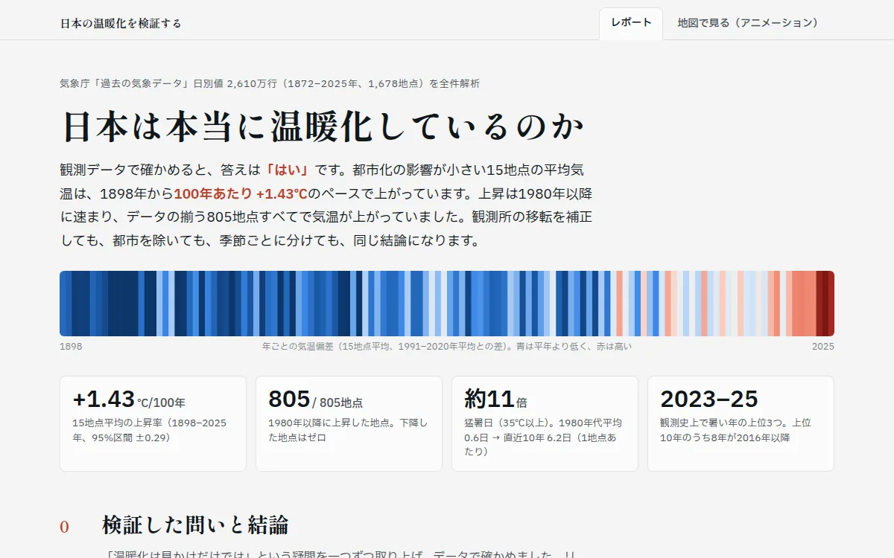
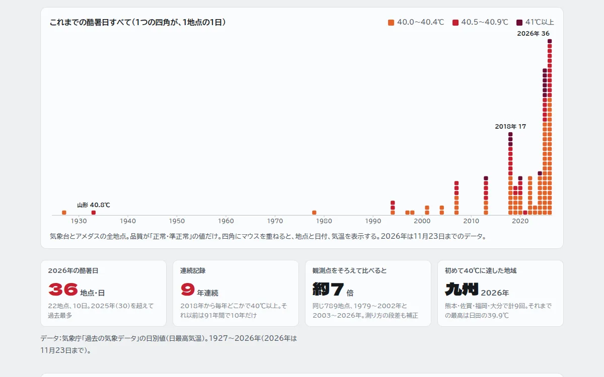
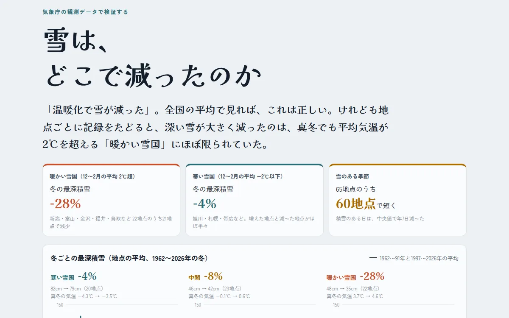

オープンデータセット ＋ オープンソースの取得ツール
気象庁の 150 年分の観測記録を、
AI がすぐ分析できる形に。
気象庁が公開している「過去の気象データ」から、全国の気象台とアメダス、約 1,700 地点の日別値と時別値をすべて取得し、Parquet 形式のデータセットにまとめました。Hugging Face で公開し、毎日更新しています。AI エージェント向けの説明書も付いているので、URL を一つ渡すだけで、何十年分ものデータを使った調査や分析を任せられます。
これは何か
japan-weather は、気象庁の「過去の気象データ・ダウンロード」で公開されている地上観測の記録を、全地点・全期間にわたって集めたデータセットです。気温、降水量、積雪、風、日照、日射、湿度、気圧、雲量、天気概況など、日別値で 23 要素、時別値で 15 要素を収録しています。値ごとに気象庁の品質情報と均質番号（観測場所や方法が変わった区切り）も残しているので、長い期間を比べる分析にも使えます。
データは列指向の Parquet 形式で、年ごと・月ごとのファイルに分けてあります。必要な年だけを手元に落とし、DuckDB などで SQL を書けばすぐに集計できます。たとえば、東京の 2025 年 8 月の日最高気温は次の一行で取り出せます。
duckdb -c "SELECT date, temperature_max
FROM read_parquet('~/.cache/japan-weather/data/daily/*/*.parquet', hive_partitioning = false)
WHERE station_id = 's47662' AND date >= DATE '2025-08-01' ORDER BY date LIMIT 5"データの取得から公開までを行う道具（Go で書いた jwd）も、MIT ライセンスのオープンソースとして公開しています。
なぜ作ったのか
気象庁は、明治時代からの観測記録を誰でも無料で取り出せるようにしています。とてもありがたい公開です。ただ、「過去の気象データ・ダウンロード」は画面で地点・要素・期間を選んで CSV を受け取る仕組みで、一度に受け取れる量には上限（地点 × 要素 × 日数で 20 万まで）があります。プログラム向けの API は公開されておらず、アメダスの JSON で手に入るのは直近の数日分だけです。
そのため、「全国で暑い日はどれだけ増えたか」「雪はどこで減ったか」のように、多くの地点の長い記録を横断する分析をしようとすると、まずデータを集めるだけで大仕事になります。全地点・全期間を集めると、要求は日別と時別を合わせて約 7 万回になりました。
このプロジェクトは、その収集を一度だけ丁寧に行い、結果を扱いやすい形で公開します。データの準備に時間を取られずに、問いを立てて確かめることに集中できるようにするのが目的です。AI エージェントと組み合わせれば、調査や分析を短い時間で何度も試せます。
どのように集めて、更新しているか
- 気象庁から取得要求は一度に一つだけ。応答のあとに約 6 秒の間隔を空け、混雑の合図があれば間隔を広げる。アクセスの制限や保守を検知したら、回避せずに止まる。
- Parquet に整形CSV を列の決まった表に直し、品質情報、現象なし情報、均質番号を値ごとに保存する。
- Hugging Face に公開年・月ごとのファイルと、地点表、均質番号の変化点表、更新の記録（manifest）を置く。
- 毎日・毎月の更新GitHub Actions が定期的に最新の値を取り、変わったファイルだけを差し替える。
毎日の更新
毎朝（日本時間 5:17 に予約。GitHub の都合で数時間遅れることがある）
今月の分について、直近の数日を取り直し、昨日までの値を加えます。所要時間は 10 分ほどです。
実行の記録（GitHub Actions）毎月の更新
毎月 1 日（日本時間 20:00 に予約）
気象庁の値は、まず速報値として公開され、数日から数週間のうちに予告なく直されることがあります。そこで、月が終わったあとに直近 2 か月を取り直し、確定した値に置き換えてから年のファイルにまとめます。
実行の記録（GitHub Actions）AI に分析を頼む
データセットには、AI エージェント向けの説明書が付いています。データの範囲、日別値と時別値の使い分け、必要な部分だけをダウンロードする方法、列の意味、SQL の例、そして長い期間を比べるときの落とし穴（品質情報の扱い、観測場所の移転、2003 年のアメダスの最高・最低気温の段差など）です。
Claude Code や Codex のように、コマンドを実行できる AI エージェントなら、質問と一緒に次の URL を渡すだけで始められます。
日本で温暖化は本当に起きているの？過去の観測データから分析して。
次のデータを使うこと：https://hotchpotch.github.io/japan-weather-dataset/llms.txt
- エージェントが
llms.txtを読み、説明書（スキル）とデータの使い方を知る。 - 必要な年や要素のファイルだけを Hugging Face から手元に落とす（日別値の全体で約 215 MB）。
- DuckDB で集計し、結果を表やグラフ、ページにまとめる。
ほかの問いの例：「この 50 年で猛暑日はどの地域で増えた？」「札幌の初雪の日は遅くなっている？」「大雨の日は増えたのか、地点をそろえて確かめて」。分析の結果は、AI の解釈も含むので、元の数値と方法を確かめてから使ってください。
使い方は三通り
URL を渡す
上のように llms.txt の URL をプロンプトに入れる。準備は要らない。
スキルを入れる
Agent Skills 形式。プロジェクトに入れておくと、気象の質問で自動的に使われる。
npx skills add \
hotchpotch/japan-weather-dataset \
--skill japan-weather自分で SQL を書く
同梱の sync.sh で必要な部分を落とし、DuckDB や pandas、Polars で読む。手順は README にある。
分析の例
AI エージェントがこのデータセットを使って分析し、一つのページにまとめた例です。どれも観測データだけから数え直したもので、方法と限界をページの最後に書いています。

日本は本当に温暖化しているのか
都市化の影響が小さい 15 地点の平均気温は、1898 年から 100 年あたり +1.43℃ のペースで上昇。1980 年以降にそろう 805 地点のすべてで気温が上がっていた。移転の補正、都市の除外、季節別の比較でも結論は同じ。気象庁の公表値も再現している。

酷暑日は増えたのか
2026 年に名前が付いた「酷暑日」（最高気温 40℃ 以上）を 1927 年から数えると、延べ 144 回のうち 117 回が 2018 年以降の 9 年間。同じ 789 地点に限り、測り方の段差を補正しても、2003 年以降はそれ以前の約 7 倍。

雪は、どこで減ったのか
冬の最深積雪は、真冬の平均気温が 2℃ を超える「暖かい雪国」（北陸・山陰の海沿いなど）で 28% 減った。北海道の大半などの「寒い雪国」では 4% 減にとどまる。降水量は変わらないまま、雪が雨に変わっていた。
データの中身
| 部分 | 期間 | 内容 |
|---|---|---|
daily（日別値） | 1872 年〜昨日 | 平均・最高・最低気温、降水量（合計、1 時間・10 分間の最大）、日照時間、全天日射量、最深積雪、降雪量、風速・最大風速・最大瞬間風速と風向、蒸気圧、湿度、気圧、雲量、天気概況。約 2,600 万行、約 215 MB |
hourly（時別値） | 1885 年〜昨日 | 気温、降水量、降雪・積雪の深さ、日照時間、風向・風速、全天日射量、気圧、相対湿度、蒸気圧、露点温度、天気、雲量、視程。約 6 億行、約 1.9 GB |
stations | 地点表。名前と読み、緯度・経度、標高、観測している要素、観測の終了日 | |
homogeneity_breaks | 均質番号の変化点。移転や観測方法の変更で、長期の比較に注意が要る日付 |
行数と容量は 2026 年 11 月の時点。気象台・アメダスの地上観測のみで、予報、レーダー、高層・海上の観測、気象庁の月別統計や平年値は含みません（日別値から計算できます）。列の一覧はデータセットのカードと docs/dataset.md にあります。
ライセンスと出典
データは気象庁ホームページのもので、公共データ利用規約（第 1.0 版）（PDL 1.0、CC BY 4.0 と互換）に従って利用できます。このデータセットを使ったものを公開するときは、出典と、加工したこと・加工した人を書いてください。Hugging Face で公開しているデータは、次のとおり加工したものです。
出典：気象庁ホームページ「過去の気象データ・ダウンロード」（https://www.data.jma.go.jp/risk/obsdl/）をもとに Yuichi Tateno (@hotchpotch) が加工して作成
このデータセットを使って作った表やグラフを公開するときは、加工者としてあなた自身の名前を書いてください。このプロジェクトは気象庁とは関係のない個人のもので、気象庁や政府が作成したかのように見せる使い方はできません。取得ツールのコードは MIT ライセンスです。